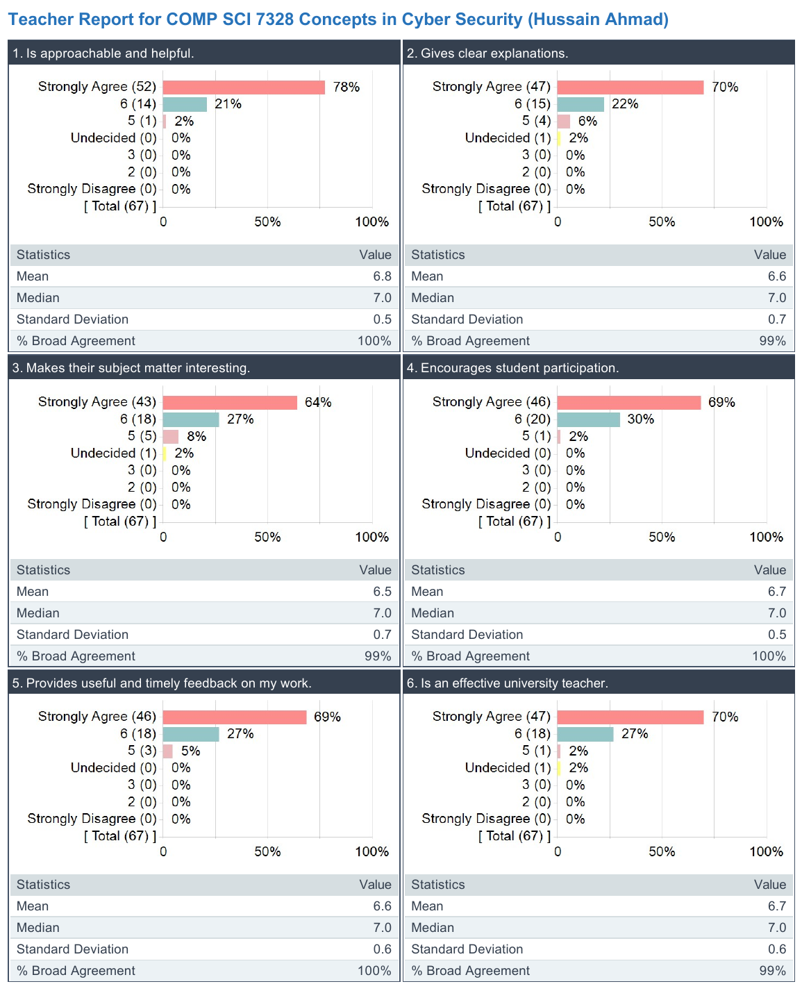
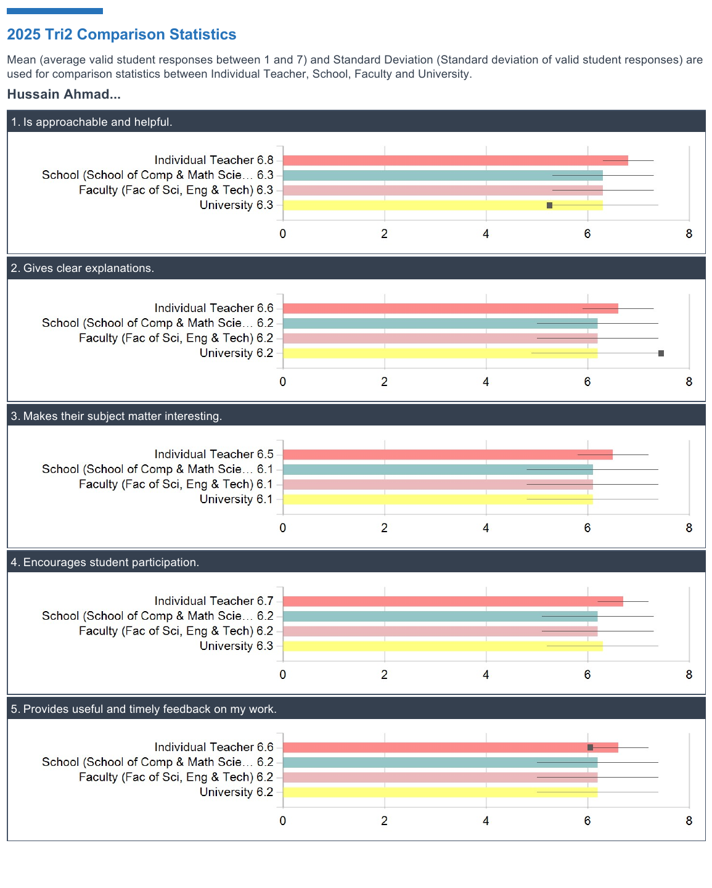

Teaching Portfolio
Teaching portfolio, pedagogical philosophy, courses taught and coordinated across on-campus, hybrid, and online delivery modes, curriculum innovations, postgraduate mentorship, and student evaluations (SELT).
Teaching Philosophy
My teaching philosophy is guided by five integrated principles that ensure clarity, depth, relevance, and inclusivity in student learning.
1. Clear Structure
I design courses with a clear and logical progression, where each topic builds systematically on prior knowledge. I structure weekly modules through platforms such as MyLearning with defined learning outcomes, curated resources, and aligned assessments. In lectures and workshops, I use structured slides, step-by-step explanations, and regular recap points to reinforce key ideas. Recorded lectures and organised materials allow students to revisit content and support different learning paces.
2. Simplicity with Depth
I focus on making complex concepts accessible without compromising technical rigour. For example, in cybersecurity and cloud computing topics, I break down complex systems into smaller components using system diagrams, architectural models, and real-world analogies. I combine this with scaffolded exercises, guided walkthroughs, and incremental problem-solving tasks to build deeper understanding over time.
3. Real-World Relevance
I embed practical application into teaching to connect theory with professional practice. In courses such as Cloud Security, I integrate hands-on platforms like RangeForce to simulate realistic cyber scenarios, enabling students to apply concepts in practice. I also use case studies, system design tasks, and industry-linked projects where students work on real or representative problems, often in collaboration with external partners. This approach strengthens engagement and enhances graduate employability.
4. Constructive Feedback
I provide continuous, structured feedback to support student development. This includes rubric-based marking, detailed comments on submissions, and formative assessments such as quizzes and draft reviews. In project-based courses, I conduct milestone check-ins and provide targeted feedback during supervision meetings, helping students track progress, refine their work, and build confidence.
5. Inclusivity and Diversity
I create inclusive learning environments that support students from diverse academic, cultural, and personal backgrounds, including neurodivergent, Aboriginal and Torres Strait Islander students, and LGBTQIA+ students. I provide multiple modes of content delivery, including recorded lectures, written resources, and interactive sessions, to accommodate different learning preferences. In hybrid teaching, I use tools such as Zoom breakout rooms, live polling (e.g., Mentimeter), and collaborative activities to ensure equitable participation for both on-campus and remote students. I also maintain clear communication and provide flexible support to foster a respectful and inclusive learning experience.
Further details on my teaching experience are available in my institutional profile.
Key Courses
Lecturer and unit coordinator delivering undergraduate and postgraduate courses across on-campus, hybrid, and online delivery modes.
Coordinated & Lectured Courses
| Course Code | Course Title | Delivery Mode | Role |
|---|---|---|---|
| INFO 6004 | Cloud Security | On-Campus / Hybrid | Lecturer & Coordinator |
| COMP SCI 7328 | Concepts in Cyber Security | On-Campus / Hybrid | Lecturer & Coordinator |
| COMP SCI 7209 | Big Data Analysis and Project | On-Campus | Lecturer & Coordinator |
| COMP SCI 3021 | Industry Project in Information Technology | On-Campus (Adelaide) | Lecturer & Coordinator |
| COMP SCI 3021MELB | Industry Project in IT (Melbourne Campus) | Melbourne Campus | Course Coordinator |
| COMP 5059 | Introduction to System Security | On-Campus / Hybrid | Lecturer |
| COMP 5063 | Research Methods for Cyber Security | Postgraduate | Lecturer |
| INFO 6017 | Working with Big Data | Postgraduate | Lecturer |
| COMP 5058 | Foundations of Computer Science - Python B | Coursework | Lecturer |
| COMP 5062 | OL Research Methods | Online Delivery | Online Lecturer |
| COMP 6029 | OL Human & Ethical Factors in Computer Science | Online Delivery | Online Lecturer |
| COMP 5032 | Innovative and Emerging Technologies | Postgraduate | Lecturer |
| INFO 6008 | Enterprise Resource Management | Postgraduate | Lecturer |
| INFO 2032 | Professional Communication and Teamwork | Undergraduate | Lecturer |
Curriculum Development
My curriculum development approach is guided by five core principles:
1. Constructive Alignment
Aligning learning outcomes, course content, learning activities, and assessments to ensure students progressively develop and demonstrate the intended knowledge and capabilities.
2. Progressive Learning Design
Structuring curricula from foundational knowledge to advanced concepts, practical application, and independent problem-solving, with each stage building meaningfully on prior learning.
3. Research and Industry Integration
Embedding current research, emerging technologies, industry practices, real-world case studies, and authentic projects to keep curricula contemporary and professionally relevant.
4. Responsible GenAI Integration
Integrating Generative AI into learning and assessment in purposeful and responsible ways, enabling students to develop AI literacy, critically evaluate AI-generated outputs, understand limitations and ethical considerations, and use GenAI as a tool to support rather than replace critical thinking, creativity, and independent problem-solving.
5. Continuous Curriculum Improvement
Continuously reviewing and refining curricula using student feedback, assessment outcomes, teaching reflections, peer input, and developments in research, technology, and industry to ensure courses remain relevant, effective, and responsive to changing needs.
Pedagogical Skills
EdTech & Platforms
Teaching Excellence & Student Reviews
Achieved an overall score of 99% in the Student Experience of Learning and Teaching (SELT) for coordinating and teaching courses at the University of Adelaide.
Student Comments
“Hussain’s teaching is highly effective due to his clear explanations, structured delivery, and ability to make complex cybersecurity concepts accessible. He consistently connects theoretical knowledge to practical, real-world applications, which helps deepen understanding and shows the relevance of each topic. His sessions are engaging and interactive, encouraging student participation and questions.”
“The timely feedback is really helpful, especially if we want to improve our succeeding assessment outputs. He also made the workshops as engaging as possible even though that for most of us (not cybersecurity students), the topics are not really interesting. But surprisingly, I really enjoyed and learned a lot from this course.”
“He always relates the course content to real-world cyber attacks, which is really helpful, and he's really approachable. He always replies to emails very fast. Yeah, he's doing great.”
“Hussain was passionate about the topic and discussed each concept in detail and with examples, this helped me understand the material in context.”
“As an educator, he is very approachable and I appreciate that in each class he checks in on us students and provides opportunities for us to ask questions or clarify on any concerns related to the assignments. I also appreciate that he organises drop-in sessions for not only the RangeForce modules but also after assignments.”
“Hussain is very supportive and attentive. He checks in on all students and keeps track of our progress and submissions. He makes sure we stay on track and submit our work on time, which really helps with time management and staying organised.”
Teaching Evaluation

